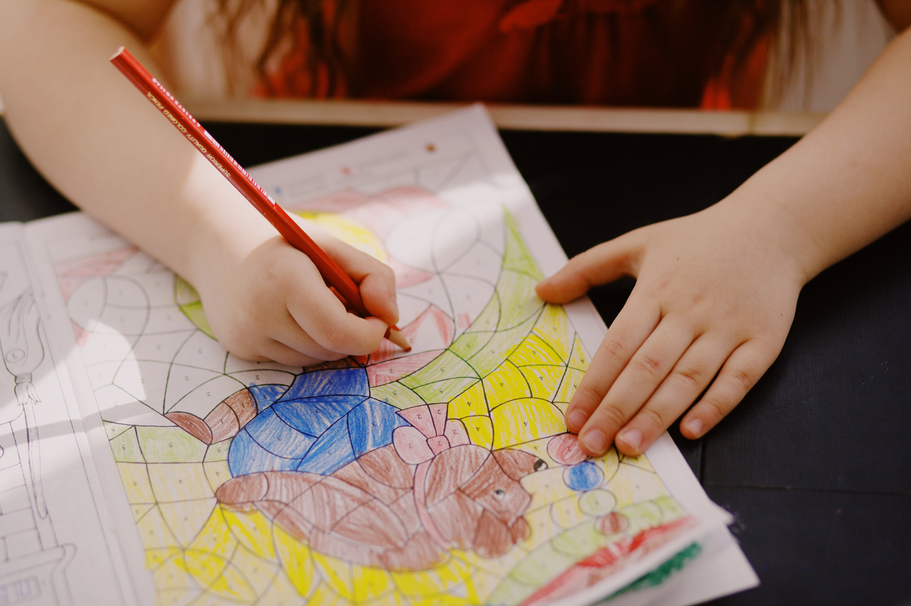

Colored Pencils
1. You need to know the theory of color: warm colors, cold colors, complementary colors, etc.
2. The first tip that you must know is when you are painting with colored pencils is the pressure must be medium (cheap colored pencils) or low (expensive).
3. The colored pencils are made for blend and the way of blending is put two colors together and try to don’t have a separation of the colors.
4. If is difficult for you, other way can be use baby oil and just put in the area you want to blend (do this brush or something).